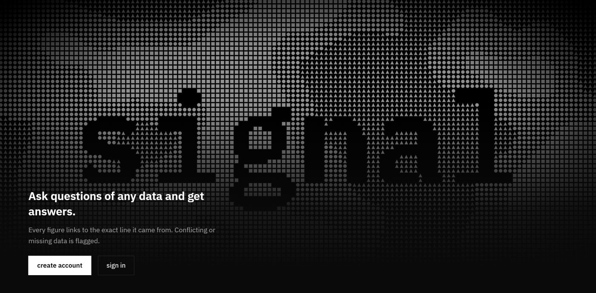
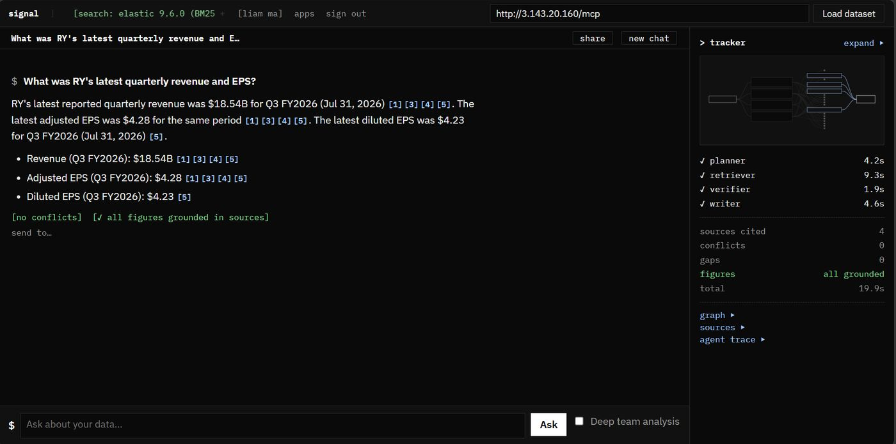

Winner, RBC “Signal in the Noise” prizeHack the North 2026
Signal
A multi-agent financial research assistant that answers with line-level citations and flags conflicting or missing data instead of guessing.
Loads new datasets from a URL through an MCP client.
Answers with line-level citations, found by hybrid BM25 and vector search in Elasticsearch.
A FastAPI backend streams the live agent trace.
Flags conflicting or missing data instead of guessing.
Python · FastAPI · Elasticsearch · OpenAI · MCP · MongoDB

